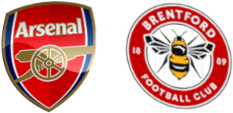
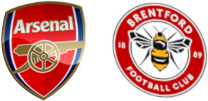

Londyński arsenal oczami polskich kibiców
Odkryj co dla ciebie przygotowaliśmy:
NASTĘPNY MECZ:
Arsenal - Brentford
14 sierpnia 2021
16:00, Sobota
Brentford Community Stadium


Londyński arsenal oczami polskich kibiców
Odkryj co dla ciebie przygotowaliśmy:
NASTĘPNY MECZ:
Arsenal - Brentford
14 sierpnia 2021
16:00, Sobota
Brentford Community Stadium
AKTUALNOŚCI
PUBLICYSTYKA
POZNAJ ARSENAL BLIŻEJ
O NAS
Tworzymy grupę fanatyków futbolu.
Chcemy promować wartości płynące ze sportu i
razem z wami tworzyć wspaniałą społeczność.
Wszystko co tutaj znajdziecie jest robione z pasją.
Śledźcie poczynania Kanonierów razem z nami.
Cieszymy się, że z nami jesteście!
Masz do nas sprawę?
Napisz na podany mail, a na pewno się odezwiemy.
Nie zapominajcie też o
największej grupie fanów Arsenalu na polskim Facebooku!
Tam też możecie nas znaleźć.
Porady i skargi: szymek7111@gmail.com
Współpraca: szymon.kotara@microsoft.wsei.edu.pl